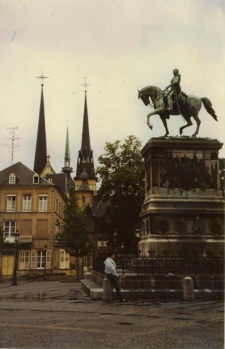
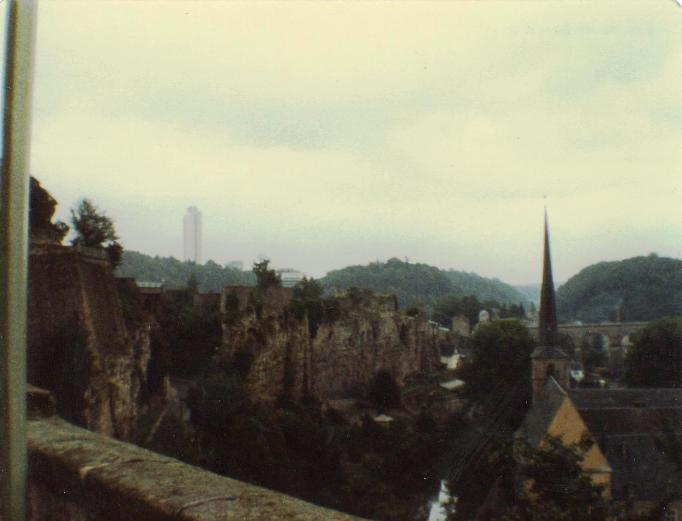

Inter Rail 1984 Day 3
Tuesday 4th September 1984

Was woken up by a fellow resident getting up and about at 7.15 am. Quick wash and dress and down to breakfast by 7.30am. Had a slice of ham and a slice of cheese, with 2 pieces of bread followed by bread and jam with black tea. Got our YHA cards back stamped and then dashed to the Metro to get to the main train station.
John got our tickets stamped whilst I found out the right platform. The train left at 8.06am, just a tad late. We arrived in Brussels at 10.30 am. Found out that our train didn't stop at Brussels Central and headed onto Brussels Midi. It was not the most exciting of places. Decided not to stop here as it was spitting with rain and we were miles away from anywhere we wanted to see. i.e. the Atom was 40 minutes away as was rue Edmond Picard or so the voice on the tourist telephone said.
Bought some bread and some cards and sat in a cafe with 2 cups of cafe au lait grand tasse to write the cards. Also bought some Thorntons-like sweets. Got our tickets stamped and got on a train to Luxembourg, a Swiss carriage this time. It was very modern inside except for the loos. When you flush, the bottom of the pan flops open like a trapdoor and the contents just fall straight onto the track below. No water involved in the flushing. Plenty for washing the hands though.
Had a picnic lunch on the train with a load of people watching us who obviously thought we were completely mad. Perhaps because we finished off the meal with croissants.
The passing countryside was much more interesting. More trees, woods and undulations. Arrived in Luxembourg at about 2.45pm. Went over to the tourist office to get a map and scenic walk details. Tried to change some Belgian France into Luxembourg currency only to be told in no uncertain terms that Belgian France were the Luxembourg currency!
Dumped our rucksacks in left luggage and started off on one of the scenic routes in a bit of bitty rain. Walked into Luxembourg Old Town. Beautiful old buildings and a grand ducal palace with a guard outside. Bought a travel alarm clock, bottle opener and a book in which to record this diary plus a T-shirt. We then discovered the real beauty of the city state.
The old city is on a rocky outcrop and can only be reached by way of large old viaducts. There is a large area between the old and new towns which seemed to be the moat. Walking along the corniche we discovered the part of the medieval fortress fortifications. We spent about an hour clambering around passages and spiral staircases. Came out to look at the castle remains from the top. By now it was raining a bit harder.

At this point we were stopped by a German coach driver who was lost. We ended up getting on board the bus and directing him around the city. It proved a little difficult as we had no German and the driver didn't speak any English. He didn't recognise Hull, Grimsby or Wales but immediately knew what I was talking about when I mentioned Liverpool. We just couldn't explain that we weren't staying in Luxembourg only passing through although we managed to tell him that we were travelling “die Bahn”.
Jon then decided that we had to cross over a particular bridge a fourth different way ie underneath it. We spent the next 2 hours trying to get there. En route we would have had a game of mini golf if we had had enough local dosh. By the time the cloudburst (prolonged) arrived, I was wet through and a little dischuffed so we headed back to the station.
In the train rest room got changed completely and I mean completely from head to toe including my bra and pants. Whilst there met 2 girls from Aintree and Maghull. Tried to get the station buffet to accept a Eurocheque cash cheque. Failed miserably and had to find the station bureau de change where Jon exchanged his remaining Guilders. Had just enough dosh to buy our dinner of egg mayonnaise salad, gala pie salad and a can of Pepsi plus some bread rolls to eat tomorrow.
Caught the 20.58pm train from Luxembourg. Got an entire carriage to ourselves which seemed to be reserved for no-one. We watched them playing silly buggers with the trains in Thionville, France where Jon waved his socks at France. The customs check consisted of a man poking his head around the door and asking our nationality. Didn't even look at our passports once they found out we were British.
Managed to get a bit of shuteye before being woken by our arrival in Strasbourg at about 0.03am
Notes about the day
- The Luxembourg war memorial is in a strange round building with locked away stained glass and a perpetual flame. Their war lasted from 1940 – 1945. No phoney war for them it seems.
- Their Cathedral de Notre Dame was nowhere near as ornate or depressing as a lot of their catholic counterparts.
{kind=link}
{kind=link}